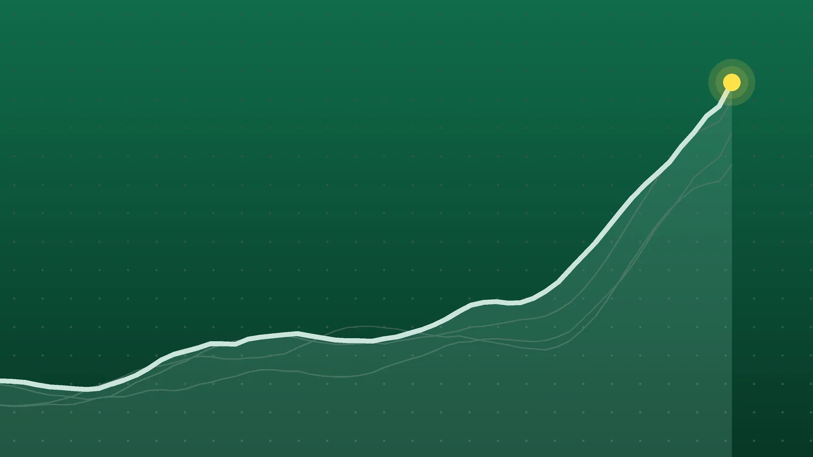

SportsExplainer
Premier League Scores, Oct. 25: Bournemouth Rout Man United 3-0
United’s winless run reached eight games in all competitions, while Liverpool got their first home league win of the season and climbed to fourth.

Quick take
- Bournemouth won 3-0 at Old Trafford with goals from Rayan, Marcus Tavernier and Evanilson; Michael Carrick had benched captain Bruno Fernandes.
- Liverpool beat Brighton 2-0 at Anfield with a Pascal Gross own goal and an Alexander Isak finish four minutes apart in the first half.
- Newcastle won 2-0 at Crystal Palace through Will Osula and Harvey Barnes; Hull drew Brentford 1-1, and Sunderland and Leeds drew 0-0.
- Manchester City and Arsenal still lead on 21 points after eight games; Brighton are third with 16 and Liverpool fourth with 15.
Why it's trending Five Premier League matches on Sunday, Oct. 25, finished the eighth round, including a 3-0 home defeat for Manchester United.
Premier League scores for Oct. 25
Manchester United’s slide reached a new low on Sunday. Bournemouth scored twice in five minutes before halftime and added a third after the break to win 3-0 at Old Trafford, Sky Sports reported. Michael Carrick had left captain Bruno Fernandes on the bench.
At Anfield, Liverpool beat Brighton 2-0 for their first home league win of the season and moved up to fourth, ESPN said. Newcastle won 2-0 at Crystal Palace, and the other two games ended level. Five matches produced eight goals, and no home side won except Liverpool.
All final scores
| Winner | Score | Loser | Note |
|---|---|---|---|
| Bournemouth | 3-0 | at Manchester United | Rayan 38’, Marcus Tavernier 43’, Evanilson 71’ |
| Liverpool | 2-0 | Brighton & Hove Albion | Home win; Pascal Gross own goal 17’, Alexander Isak 21’ |
| Newcastle United | 2-0 | at Crystal Palace | Will Osula 47’, Harvey Barnes 58’ |
| Hull City | 1-1 | Brentford | Draw; Oli McBurnie penalty, Dango Ouattara 63’ |
| Sunderland | 0-0 | Leeds United | Draw in strong wind at the Stadium of Light |
Bournemouth pile on United’s misery
Rayan opened the scoring in the 38th minute at the far post from a Justin Kluivert free kick. Five minutes later, Leny Yoro slipped in possession and Marcus Tavernier made it 2-0. Evanilson beat goalkeeper Senne Lammens to a loose ball for the third in the 71st minute, per Sky.
United came in on a seven-game winless run, ESPN’s live coverage noted, so this made eight across all competitions. They lost 4-1 at Como in the Champions League on Wednesday. Carrick said afterward, “What is next? I don’t know,” according to Sky. Bournemouth, coached by Marco Rose, have now won four straight games in all competitions.
Liverpool find their edge at Anfield
Liverpool scored twice in four minutes. Wirtz’s shot was deflected in by Brighton’s Pascal Gross in the 17th minute, and Isak finished a Bradley Barcola cross in the 21st, ESPN reported. It was Isak’s sixth goal in seven league appearances.
Brighton, the league’s top scorers going in, had not conceded in any competition for more than nine hours and had not lost since late August. Liverpool manager Andoni Iraola said his side “needed this win at home,” NBC Sports reported. Brighton manager Hurzeler called it “a missed opportunity.”
Newcastle win at Selhurst Park
After a scoreless first half, Osula put Newcastle in front within two minutes of the restart from a Jacob Murphy cross, and Barnes added the second shortly before the hour, according to the Press Association via The42. Joe Willock also had a goal ruled out for offside. It was Newcastle’s first clean sheet since August, Sky said, and some home fans booed at the end, heaping pressure on Palace head coach Pierre Sage.
In Hull, McBurnie’s first-half penalty put the promoted side ahead before Ouattara equalized, Sky reported. Hull remain unbeaten at home. Sunderland’s draw with Leeds ended a run of four straight league losses, TNT Sports said.
What it means
Every club has now played eight games. Applying Sunday’s results to NBC Sports’ table after Saturday gives this top of the table, which matches the positions the match reports gave:
| Position | Club | Points |
|---|---|---|
| 1 | Manchester City | 21 |
| 2 | Arsenal | 21 |
| 3 | Brighton | 16 |
| 4 | Liverpool | 15 |
| 5 | Chelsea | 13 |
| 6 | Brentford | 11 |
| 7 | Leeds United | 11 |
| 8 | Newcastle United | 11 |
Liverpool are six points off the top. Brighton’s lead over them shrank from four points to one. Leeds, Newcastle and Aston Villa are all on 11, behind Brentford on goal difference.
At the other end, United are 16th with 7 points, one point above the relegation zone, Sky noted. Bournemouth’s win took them from 6 points to 9. Sunderland stay bottom with 5.
What’s next
No Premier League games are scheduled for Monday, Oct. 26. Round nine starts Saturday, Oct. 31, according to the Premier League’s fixture list. Times ET (the U.S. clocks change on Nov. 1):
- Chelsea vs. Manchester United, Saturday, 8:30 a.m.
- Tottenham Hotspur vs. Crystal Palace, Saturday, 1:30 p.m.
- Aston Villa vs. Fulham, Saturday, 4 p.m.
- Liverpool vs. Arsenal, Sunday, Nov. 1, 11:30 a.m.
- Newcastle United vs. Everton, Monday, Nov. 2, 3 p.m.
Manchester City host Brighton and Coventry City host Sunderland on Saturday as well.
Sources
- Sky Sports Man Utd 0-3 Bournemouth: Michael Carrick drops Bruno Fernandes but sees Cherries humble United at Old TraffordOct. 25, 2026
- Manchester United Report: United 0 Bournemouth 3Oct. 25, 2026
- ESPN Man United vs. Bournemouth LIVE: Premier League updates as Evanilson's third heaps misery on the hostsOct. 25, 2026
- ESPN Liverpool's front four get firing as Andoni Iraola's men outplay BrightonOct. 25, 2026
- NBC Sports Liverpool 2-0 Brighton: Wirtz, Isak lead Reds to win at AnfieldOct. 25, 2026
- Sky Sports Crystal Palace 0-2 Newcastle: Pressure rises on Pierre Sage after dreadful second-half showingOct. 25, 2026
- The42 (Press Association) Newcastle beat Palace as Brentford/Hull and Sunderland/Leeds end in drawsOct. 25, 2026
- Sky Sports Hull City 1-1 Brentford: Dango Ouattara rescues point for Bees after Oli McBurnie penaltyOct. 25, 2026
- TNT Sports Sunderland v Leeds - Premier League result as Regis Le Bris' side remain bottomOct. 25, 2026
- NBC Sports Premier League table for 2026-27 season: Latest standingsOct. 24, 2026
- Premier League Fixture amendments for Premier League matches in October and NovemberAug. 17, 2026
Keep reading

Premier League Scores, Oct. 24: Villa End Man City’s Perfect Run
Premier League scores for Oct. 24, 2026: Aston Villa beat Man City 2-1, Arsenal topped Everton 2-0, Spurs won 2-0 at Chelsea and Fulham won 1-0 at Coventry.

Champions League Scores, Oct. 21: Rice Rescues Arsenal at Bayern
Champions League scores for Oct. 21, 2026: all nine Matchday 3 results, from Bayern 2-2 Arsenal and Real Madrid 4-1 Leipzig to Como’s 4-1 rout of Man United.

Europa League Scores, Oct. 22: Bournemouth Beat 10-Man Milan 3-0
Europa League scores for Oct. 22, 2026: all 18 Matchday 3 results, including Bournemouth 3-0 Milan, Beşiktaş 2-2 Crystal Palace and Hoffenheim 3-0 Lyon.